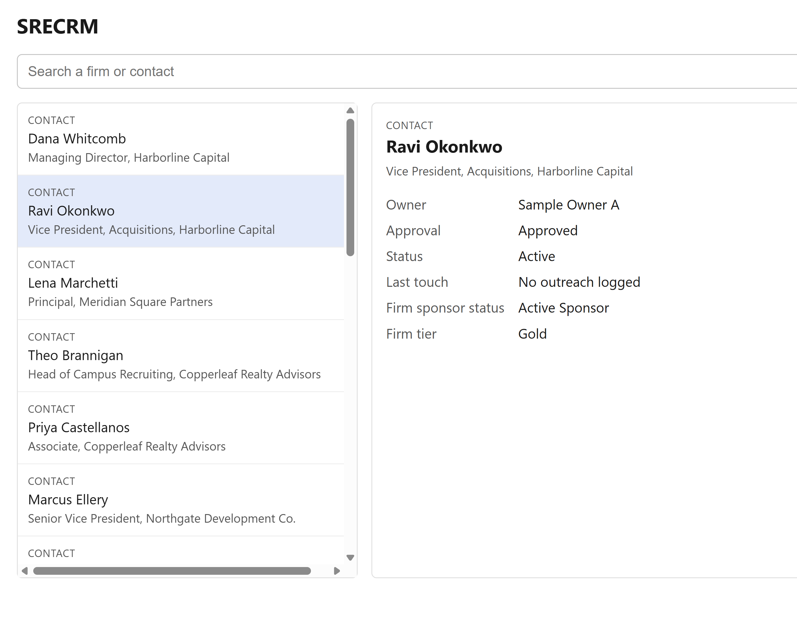
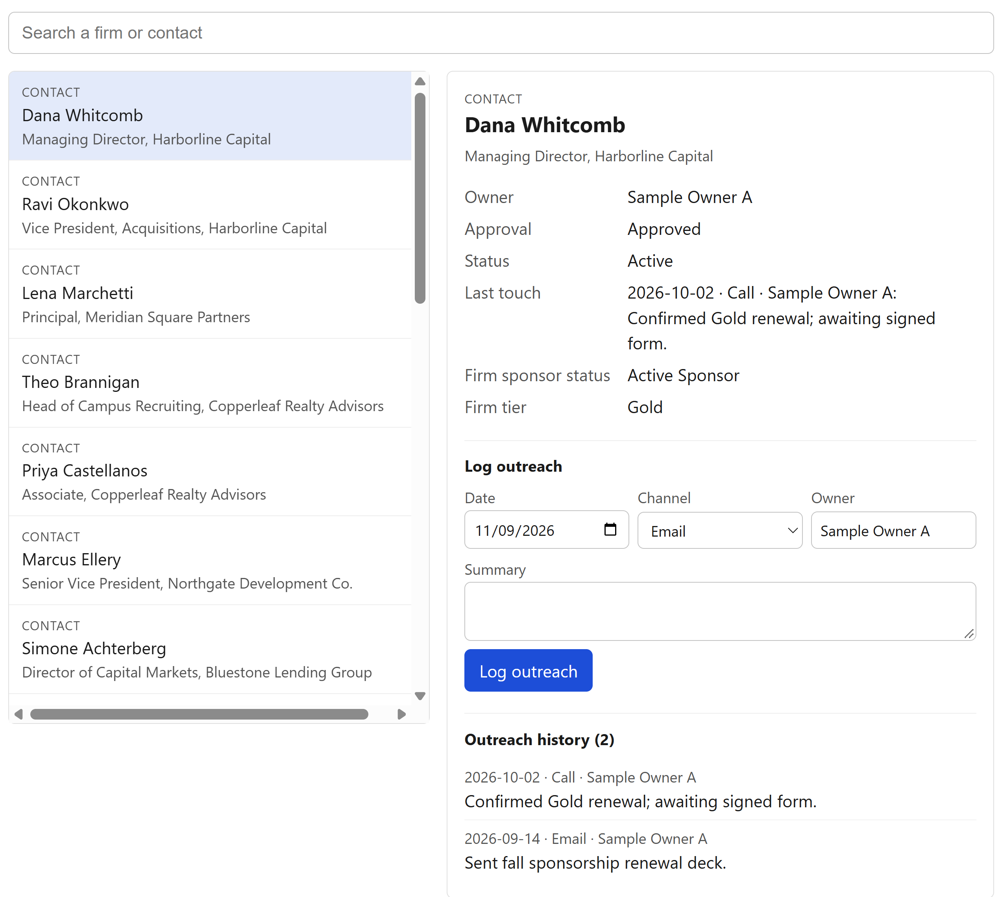
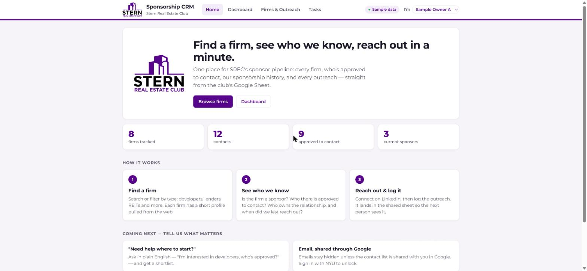
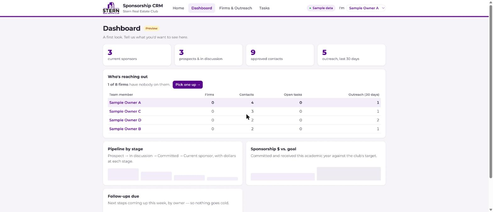
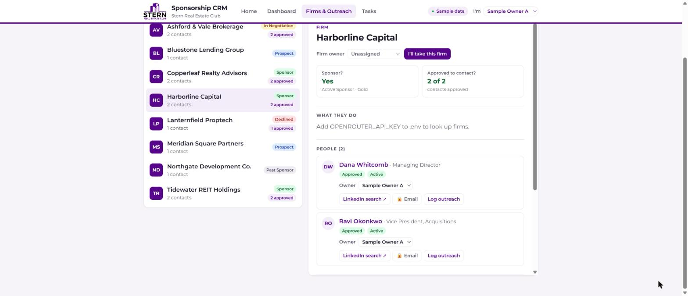
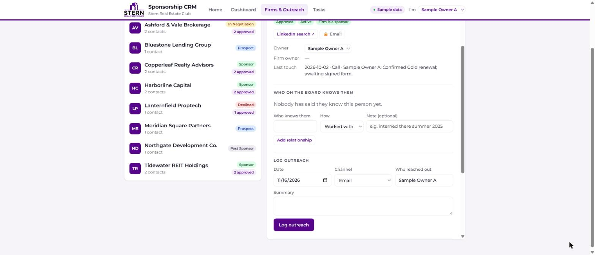
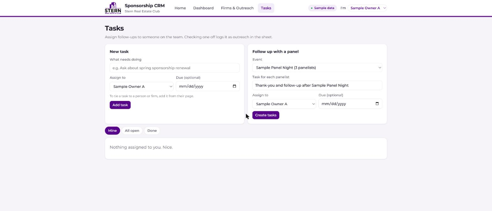

SRECRM
A sponsorship CRM for the NYU Stern Real Estate Club board.
Problem
SREC's sponsorship team tracks firms, contacts and outreach across a shared Google Sheet, Slack, and people's heads. Nobody can quickly see who owns a firm, when we last talked to someone, or whether a contact is cleared to approach, so outreach gets duplicated or stalls.
Who it's for
- The SREC sponsorship team and board (4–6 people), starting with me as AVP of Sponsorships.
- Testers: two or three board members.
- The next AVP inherits it.
What it does / core workflow
- Open the app and search a firm or contact.
- See its history: owner, approval status, last touch, sponsor tier, past events and panels.
- Claim the firm or contact (or assign it to someone on the board) so nobody else reaches out at the same time.
- Pick a channel and a template; preview the message with merge fields filled in. (Not built yet: Build 3.)
- Send via a mailto link or copy for LinkedIn. (Not built yet: Build 3.)
- Log the outreach with date, channel and owner, either from the detail panel or by checking off an assigned task.







Riskiest part
#1 risk: getting real, trustworthy sheet data in and out from inside NYU's Google Workspace. If the app can't read the live sheet, or writes rows that break its formulas or duplicate people, the board goes back to the spreadsheet and Slack and the app is dead.
How Build 2 tested it first: before any new features, I connected to the real sheet (174 firms, 450 contacts) and wrote real rows. That surfaced the problems early: service-account keys are a poor fit for NYU Workspace (so I switched to Google sign-in), the Contact column is a formula filled to row 100 (so writes go into the first empty row instead of appending), there are duplicate contacts (merged on read, plus a dry-run-first npm run dedupe), and 38 contacts have no firm.
Next risk: other board members using it. Today it runs on my laptop with my Google sign-in. Hosting it and giving each person their own nyu.edu sign-in is Build 5, and it is the step that turns this from my tool into the board's tool.
How it's built (architecture)
- Backend: Node + Express (
server.js), bound to 127.0.0.1 only. - Frontend: plain HTML, CSS and JavaScript in one page (
public/index.html). No framework, no build step. - Database: none of its own. The existing Google Sheet stays the source of truth. The app signs in with Google (OAuth, an Internal app in an NYU Cloud project) instead of a service account: no long-lived key to protect, NYU's sharing rules don't get in the way, and each board member can later sign in as themselves so access follows the sheet's own sharing.
- What it writes: only the log tabs (
Outreach_Log,Event_Attendance,Relationships,Assignment_Log,Tasks) and theOwnercolumn on Contacts and Organizations. Every owner change is recorded inAssignment_Log. All other fields are edited in the sheet by design. - Data modes:
DATA_SOURCEswitches between sample data (default, for screenshots and tests), a read-only Excel copy (demo fallback) and the live sheet. - Models: Claude Haiku 5.5 through OpenRouter, with web search, writes a short "About this firm" profile. It gets only public firm info (name, type, city, website), never contact data, and each answer is cached so a firm is looked up once.
- Analytics: PostHog, with no names, emails or search text sent (see "How I'll know it works").
- Run it:
npm start, then openhttp://localhost:3000. - Access control: today, only someone on my laptop can reach it. Build 5: hosted, Google sign-in limited to nyu.edu plus an allowlist.
One action, end to end: logging an outreach.
- On load, the browser calls
GET /api/data. The server reads the sheet's tabs through the Sheets API with my OAuth token, finds columns by header name, merges duplicate contacts, and keeps the result in memory for up to a minute. - I search, open a contact, fill in the Log outreach form, and click Save. The browser sends
POST /api/outreachwith date, channel, owner and summary. - The server checks the fields and writes the row into the first empty row of
Outreach_Log, leaving the sheet's formulas alone. - The server returns the saved row and the history updates on screen. At the same time the browser sends PostHog an
outreach_loggedevent with only the channel and the seconds it took.
Out of scope (for now)
- Google Drive integration
- Bulk data import (the existing Python pipeline already does this)
- Editing core contact or organization fields in the app (edited in the sheet by design)
- Sending email from the app itself
How I'll know it works
A board member can find a firm and log an outreach in under a minute without asking me.
Measured with PostHog, live as of Build 2:
- Outreach logged per week: count of
outreach_logged. - Distinct weekly users: unique browsers sending
app_opened. - Time to log:
seconds_since_detail_openedonoutreach_logged. The target is under 60 seconds.
Also tracked: searched (only the query length and result count), firm_opened, contact_opened, task_created, task_completed, owner_assigned and tab_viewed. Privacy rule: no firm names, contact names, emails or search text go to PostHog. Autocapture and session recording are off, and the part of the URL that holds firm names is stripped from every event.
Budget
| Item | Estimate | Notes |
|---|---|---|
| Build budget (coding agent) | ~$15 per build | Build 2 measured at ~29.5M Claude Code tokens (about 97% cache reads), about $15 at Opus 5.5 API rates. About $20 to date. |
| Unit cost: search or log an outreach | $0 | The Google Sheets API is free at this volume. Reads are cached for a minute. |
| Unit cost: firm profile | ~$0.02 per firm, once | Haiku 5.5 tokens cost a fraction of a cent; most of the cost is OpenRouter's web search. Cached, so all 174 firms come to roughly $3–4 in total. Hard cap: $10 credit limit on the key. |
| Analytics | $0 | PostHog free tier (1M events/month). We'll use a tiny fraction of that. |
| Hosting | $0 now; ~$0–10/mo later | Runs on localhost today. Hosting is Build 5. |
| My time | ~5–6 hrs/week | 6 hrs in Build 2. |
Security and recovery
- ☑
.env, keys and credential files are excluded by.gitignore. The OAuth client file and token live outside the repo and outside OneDrive. - ☑ No real contact data in the repo. Only made-up sample data in
data/sample/. - ☑ Spending limit: the OpenRouter key has a $10 cap. The Sheets API and the PostHog free tier cost nothing.
- ☐ Least privilege, partly done. The app only writes to the log tabs and Owner, and the server only listens on 127.0.0.1. But the Google sign-in asks for the full spreadsheets scope (every sheet my account can open), because Google's narrower scope can't open a sheet that already exists. A per-person sign-in in Build 5 limits each person to what the sheet already shares with them.
- ☑ Recovery: Git is the save point for every working step. Every sheet write is an added row or a logged Owner change, so nothing in the sheet is overwritten without a record, and the sheet keeps its own version history. Changes that could clash are rejected instead of overwriting. A cloud rollback path comes in Build 5.
Build log
November 8, 2026
- What shipped: PRD v1 and Product Page live. Repo scaffolded with AGENTS.md rules (no real data, no secrets).
- Prior work: pre-design summary of the Apps Script version (October 2026).
- What broke: nothing major.
- Cost: 3 hrs, ~2.0M tokens (mostly cached).
- Next: smallest local prototype (search + detail view with sample data).
November 9, 2026
- What shipped: local prototype on Node + Express with made-up sample data (8 firms, 12 contacts, 10 outreach rows). Search a firm or contact, see owner, approval, last touch, sponsor status and tier, view full outreach history, and log a new outreach from the detail panel. Screenshots added above.
- What broke: an old server process kept port 3000 busy after a restart; malformed requests returned an error page that exposed local file paths (fixed with a short JSON error); a sideways scrollbar in the results list (fixed); the first push was rejected until I pulled a README edit made on GitHub.
- Cost: 1 hr, ~6M tokens (estimate, mostly cached). No API or hosting cost yet.
- Next: Build 2: read the real Google Sheet through a service account (the riskiest part), add PostHog events, and publish PRD v2 with risks, architecture and budget.
November 13, 2026
- What shipped: live connection to the real sponsorship sheet (174 firms, 450 contacts). Search and history now run on real data, and logging an outreach writes a row to the sheet's
Outreach_Logtab. Channels and owner suggestions come from the sheet's Lists tab. A read-only Excel-copy mode is kept as a demo fallback. - Decision: switched from a service account to Google sign-in (OAuth). The sheet is in NYU's Google Workspace, where service-account keys and outside sharing are often blocked; sign-in also sets up per-person access for later.
- What broke: a three-day-old server was still holding port 3000, so the first test hit old code; the sample data's channel list didn't match the real sheet's; the sheet's Contact column is a formula filled down to row 100, so a plain append would have landed at row 101 (the app now writes into the first empty row and leaves formulas alone); 38 contacts have no organization filled in.
- Cost: ~4 hrs across Thursday and Friday, ~26.7M tokens (measured, about 97% cache reads). No API or hosting cost (Google Sheets API is free at this volume).
- Next: board feedback from today's demo; PostHog events; PRD v2 risks and budget; per-person sign-in so
Owneris filled from who is logged in.
November 16, 2026 · Build 2
- What shipped: PRD v2 (risks, architecture, budget, security) on this page. PostHog analytics are live and confirmed in PostHog's Activity view, with no contact data sent. Also in Build 2 after the live-sheet connection: SREC branding; Home, Dashboard and firm-first Firms & Outreach tabs; owners on firms and contacts, with every change logged in
Assignment_Log; an "I'm" picker, one-click "I'll take it" and a team panel; a record of who on the board knows each contact; duplicate contacts merged on read, plus a dry-run-firstnpm run dedupe; and assignable tasks that log as outreach when checked off. - What broke: PostHog's setup screen said "no events" even though events were arriving. I checked the browser's network traffic, saw PostHog accepting them, and skipped the setup wizard. A search-results count would have counted group headers as results; I caught it before shipping. The earlier token estimates were low: Claude Code's own logs show 2.4M on Nov 8 and 9.7M on Nov 9.
- Cost: 6 hrs this build (4 on Thu/Fri, 2 today). ~29.5M tokens for Build 2, measured from Claude Code's logs and about 97% cache reads; that's about $15 at API rates, ~44M tokens and about $20 to date. OpenRouter is capped at $10. $0 for hosting, the Sheets API and PostHog.
- Next: show the board, and watch PostHog for real use and time-to-log; message templates with mailto and copy-for-LinkedIn (workflow steps 4–5); fill in the firm for the 38 contacts missing one; plan hosting and per-person nyu.edu sign-in for Build 5.